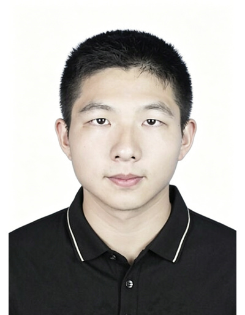

PORTFOLIO / 2026
智能医学工程在读，专注于人工智能与医学影像的交叉领域。 致力于用可解释AI和深度学习技术解决医疗难题。

智能医学工程 · 工学学士
Guangrui Xu, Xiaoyu Shen
研发实习生 · 声学实验室
研发实习生
远程研究助理 · 香港大学 张清鹏博士指导
学生研究员 · 山东大学 乔旭博士指导
团队成员 · 厦门大学信息学院暑期科研
以下是我的实习证明与论文证明等支撑材料，按类别整理如下。